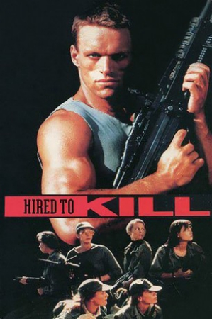

Country:United States, 91 minutes
Spoken languages:
Genres:Action, Thriller
Director(s):Nico Mastorakis, Peter Rader
Writer(s):Nico Mastorakis, Fred C. Perry, Kirk Ellis
Video Codec:Unknown
Number: 2584


Certification:
Storyline:
A fashion photographer and seven models travel to a South American island fortress, ostensibly to do a fashion shoot. In reality, the photographer is a mercenary and their job is to free an imprisoned rebel leader
Cast:


Medium: Bluray + DVD,
Loaned: No
Aspect ratio: Unknown